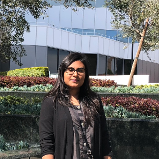

About Me
Welcome to my home page! I am Farha Jawed. Currently, I am pursuing my M.S. in Computer Science at Northeastern University, Boston. I am specializing in Human-Computer Interaction. I have profound interest in designing and developing interactive systems to immerses the user in an enjoyable experience. Towards the goal of improving user experience, I am constantly improving my skills and learing new tools pertinent to web development. I am participating in an intensive web development bootcamp at the extension school of UCLA. You can view my past projects by clicking on my Portfolio page. I am seeking full-time opportunities in web development, human-computer interaction, and user experience design sectors.
FUN FACT: I hail from Dhaka, Bangladesh. I am passionate about origami. I enjoy cutting and folding papers to design new patterns.